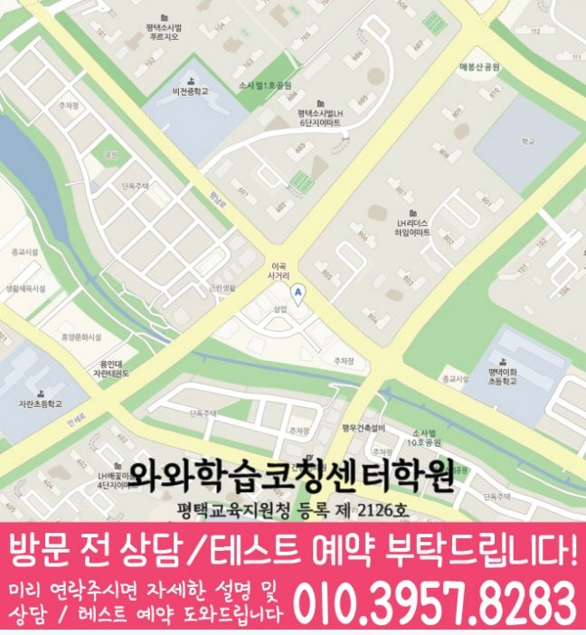

MIDDLE MATH
비전동 중등 수학학원
비전동 중등 수학학원에서 학교 시험과 학습 집중 점검을 판단하는 자료와 내신 범위·학교별 출제 유형과 시험 시간 배분 확인 순서, 학교 시험 준비, 센터·학년 정보를 정리했습니다.
01 Quick answer
비전동 중등 수학: 학교 시험과 학습 집중 점검
‘학교 시험과 학습 집중 점검’이 필요한 비전동 중학생이라면 개념 설명과 첫 풀이 흔적을 함께 확인하세요. 현재 상태: 시험 범위표를 개념·대표 유형·서술형·누적 오답으로 나누고 미완료 항목을 표시하세요. 연습 방법: 교과서 예제와 학교 자료에서 조건이 바뀐 문제를 골라 풀이 이유까지 다시 적으세요. 확인 기준: 시험 전에는 새로운 문제 수보다 각 범위의 설명·재풀이 완료 여부를 확인하세요.
확인 기준
비전동 상담 전에는 내신 범위·학교별 출제 유형 자료와 시험 시간 배분 재확인 질문을 준비하고 등록 조건은 별도 표에 둡니다.



010-6839-8283학습 답변 요약
핵심 주제는 ‘학교 시험과 학습 집중 점검’입니다. 내신 범위·학교별 출제 유형과 시험 시간 배분의 출발 상태를 확인하고 개념 연결과 수학 학습 루틴의 실행 기록과 학교·센터 사실을 분리해 살펴봅니다.
비전동 중등 수학 진단: 학교 시험과 학습 집중 점검
비전동에서 중등 수학 계획을 세울 때 ‘학교 시험과 학습 집중 점검’을 첫 질문으로 둡니다. ‘학교 시험 범위 안에서 교과서·학교 자료·서술형 유형을 구분해 준비하는지’가 실제 자료에서도 드러나는지부터 확인하세요.
두 번째 질문은 ‘쉬운 문제에서 계산 시간이 길어지거나 어려운 문제를 붙잡아 검토 시간을 잃는지’이며 한 영역에서만 막혔다면 그 부분부터 보완하고, 둘 다 어렵다면 내신 범위·학교별 출제 유형에서 막힌 이유를 먼저 설명한 뒤 시험 시간 배분을 재확인하세요. 일주일 뒤에는 ‘학교 시험과 학습 집중 점검’에 해당하는 새 문제도 혼자 시작하는지 다시 확인합니다.
정답보다 먼저 확인할 학교별 내신 유형과 시험 시간 배분의 풀이 흔적
최근 시험지와 교재에서 ‘시험 범위표, 교과서 예제·학교 프린트와 최근 서술형 답안’을 먼저 확인하고 ‘문항별 시작·종료 시각, 건너뛴 문제와 다시 돌아온 순서’를 다른 색으로 표시해 정답보다 판단이 바뀐 위치를 기록하세요.
재확인표에는 ‘숫자나 조건이 바뀐 학교 시험 문제에서도 개념과 풀이 이유를 설명하는지’를 첫 질문으로, ‘정확도를 유지하면서도 정한 시각에 문제를 넘기고 검산 시간을 확보하는지’를 두 번째 질문으로 적습니다. 답을 학생이 혼자 설명해야 앞서 정한 초점의 다음 행동을 고를 수 있습니다.
시험 전후 학교별 내신 유형과 시험 시간 배분의 비중을 조정하는 방법
시험 일정표에서 내신 범위와 누적 유형 문제 약점을 다른 줄에 둡니다. 이어 ‘학교별 범위와 출제 자료를 우선 확인하고 일반 문제집 진도와 분리하는 기준’과 ‘내신의 범위형 문항과 누적 유형 문제의 난도별 문항 선택 순서를 따로 연습하는 기준’을 각 자료에 적용할지 판단하세요.
주간 계획에는 내신 범위·학교별 출제 유형과 시험 시간 배분의 최소 행동을 각각 한 줄로 남깁니다. 시험 뒤에는 점수보다 근거·시간·독립 수행 기록의 변화를 비교하세요.
시험 달력에는 ‘학교 시험과 학습 집중 점검’에 필요한 내신 범위·학교별 출제 유형 확인일과 시험 시간 배분 다음 점검일을 따로 표시하세요. 시험이 끝난 뒤에는 내신 범위·학교별 출제 유형과 시험 시간 배분 기록 가운데 학생이 근거를 설명하지 못한 영역만 다음 주 계획에 남깁니다.
내신 범위·학교별 출제 유형과 시험 시간 배분 적용 전 확인할 비전동 학교와 학년 정보
공개 자료에 비전중·한광중·한광여중·평택여중 등이 학교명으로 보이지만, 학교별 진도와 자료 반영 방식은 목록이 아니라 상담 시점의 답변으로 판단해야 합니다.
현재 페이지에서 확인되는 수학 학년 범위는 중1·중2·중3이며 이 표기만으로 개념 연결과 수학 학습 루틴 과정의 운영 여부를 단정할 수는 없습니다. 제공 센터명은 와와학습코칭센터 비전점, 주소는 경기도 평택시 비전동 평남로 937 폴리프라자 602호, 603호입니다. 와와학습코칭센터 비전점 방문을 결정하기 전에는 교습비·시간표·통학 조건을 확인된 사실로만 기록합니다.
7일 동안 학교별 내신 유형을 연습하고 시험 시간 배분을 확인하는 방법
7일 계획의 출발점은 ‘시험 범위표, 교과서 예제·학교 프린트와 최근 서술형 답안’입니다. 첫 행동을 ‘범위별 개념·대표 유형·서술형·누적 오답을 네 칸으로 나누고 완료 기준 정하기’로 정하고 시작일·완료일·남은 질문을 한 줄씩 적으세요.
다음 점검 질문은 ‘숫자나 조건이 바뀐 학교 시험 문제에서도 개념과 풀이 이유를 설명하는지’입니다. 답이 불분명하면 ‘범위별 개념·대표 유형·서술형·누적 오답을 네 칸으로 나누고 완료 기준 정하기’의 설명 단계를 보완하고, 분명하면 ‘문항을 바로 풀 문제·표시 후 돌아올 문제·마지막에 검산할 문제로 나누어 시간 제한 세트 풀기’를 다음 주 행동으로 정합니다. ‘학교 시험과 학습 집중 점검’의 첫 행동은 교과서 예제와 학교 자료에서 조건이 바뀐 문제를 골라 풀이 이유까지 다시 적으세요. 다음 판단에서는 시험 전에는 새로운 문제 수보다 각 범위의 설명·재풀이 완료 여부를 확인하세요.
최근 시험지로 준비하는 학교별 내신 유형 상담 질문
상담에는 표시가 남아 있는 시험지와 학교 범위표를 가져갑니다. ‘학교 자료를 수업 계획에 반영하는 시점과 시험 전 재확인 기준이 무엇인지’와 ‘빠르게 푸는 연습보다 문항 선택과 검산 시간을 어떤 기록으로 조정하는지’를 차례로 물으세요.
상담 뒤 학생이 내신 범위·학교별 출제 유형의 첫 행동을 설명하게 하세요. 시험 시간 배분을 다시 확인할 날짜와 센터 이용 조건은 서로 다른 칸에 적습니다.
- 학생 자료시험 범위표, 교과서 예제·학교 프린트와 최근 서술형 답안
- 시험 계획학교 범위표와 시험 시간 배분 연습 완료일·재확인일
- 재확인개념 연결 확인 날짜와 학생 설명 기록
- 이용 조건수학 가능 학년(중1·중2·중3)·시간표·교습비·통학 동선
02 Parent perspective
비전동 중등 수학 학부모 상담 상황
아래 비전동 중등 수학 상담 장면은 실제 이용 후기나 특정 학생의 성과가 아닌 준비용 가상 예시입니다. 학습 결과는 학생의 출발점과 실천 정도에 따라 달라질 수 있습니다.
비전동 학생의 학교 시험과 누적 유형 문제 일정이 겹친 가상 상황입니다. 학부모는 ‘학교 시험과 학습 집중 점검’을 기준으로 내신 범위·학교별 출제 유형을 먼저 배치하고 시험 시간 배분의 최소 복습일을 따로 정합니다.
비전동의 참고 학교와 실제 재학 학교가 다른 경우를 가정했습니다. 학부모는 시험 범위표와 수학 가능 학년(중1·중2·중3)을 대조한 뒤 시험 시간 배분의 확인 방식과 개념 연결의 점검 주기를 질문합니다.
03 FAQ
비전동 중등 수학 자주 묻는 질문
학생 자료, 가능 학년과 실제 이용 조건을 나누어 답했습니다.
비전동 중등 수학에서 ‘학교 시험과 학습 집중 점검’은 어떤 자료부터 확인하나요?
첫 확인 자료는 ‘시험 범위표, 교과서 예제·학교 프린트와 최근 서술형 답안’입니다. 학생이 ‘숫자나 조건이 바뀐 학교 시험 문제에서도 개념과 풀이 이유를 설명하는지’에 직접 답하게 한 뒤 이번 주에는 ‘범위별 개념·대표 유형·서술형·누적 오답을 네 칸으로 나누고 완료 기준 정하기’만 실행해 보세요.
내신 범위·학교별 출제 유형과 시험 시간 배분 진단 기록은 어떻게 나누나요?
한 표 안에서도 내신 범위·학교별 출제 유형과 시험 시간 배분의 확인 근거와 다음 행동을 각각 다른 열에 적습니다. 같은 날짜 기록끼리 비교하면 원인이 선명해집니다.
학교 시험과 누적 유형 문제에서 내신 범위·학교별 출제 유형과 시험 시간 배분 비중은 어떻게 나누나요?
시험별 계획표는 따로 두되 내신 범위·학교별 출제 유형과 시험 시간 배분의 출발 상태를 같은 주에 비교하세요. ‘학교별 범위와 출제 자료를 우선 확인하고 일반 문제집 진도와 분리하는 기준’과 ‘내신의 범위형 문항과 누적 유형 문제의 난도별 문항 선택 순서를 따로 연습하는 기준’ 중 필요한 항목만 각 자료에 적용합니다.
상담 전 개념 연결과 수학 학습 루틴을 확인하려면 어떤 자료를 가져가나요?
개념 연결은 ‘개념 설명 메모와 대표 문제에서 해당 공식을 선택한 이유’로, 수학 학습 루틴은 ‘주간 계획표, 시작·완료 시각과 다음 날 남은 질문’으로 확인합니다. 자료를 많이 가져가기보다 표시가 남은 부분과 질문을 함께 준비하세요.
비전동 중등 수학 상담에서 가능 학년과 참고 학교는 어떻게 확인하나요?
비전동 페이지에는 수학 중1·중2·중3이 가능 학년으로 표시돼 있습니다. 실제 운영 학년과 시간은 최신 시간표를 기준으로 물어보세요. 제공된 참고 학교명은 비전중·한광중·한광여중·평택여중 등입니다. 학교명만으로 개설 여부를 판단하지 말고 학생의 시험 범위와 현재 반영 가능한 자료를 따로 물어보세요.
04 Related
비전동 관련 학원·상담 페이지
같은 지역의 과목 조합과 학년 카테고리, 앞뒤 지역 안내를 함께 확인하세요.